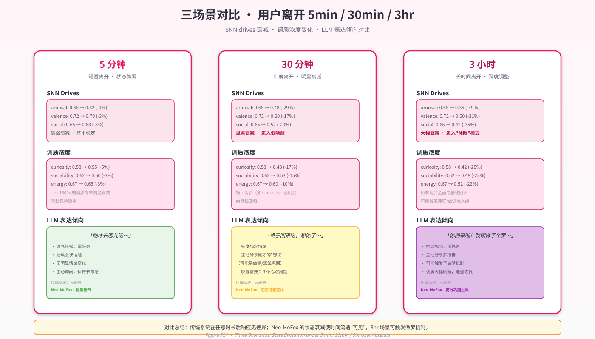
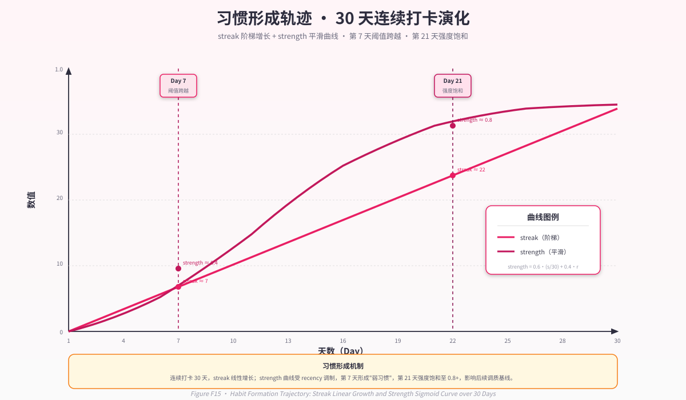

第 11 章 · 涌现行为案例研究¶
"我们不会写
if time_since_last_chat > 2_hours: mood = 'lonely'这样的代码。我们写的是：SNN 接收沉默时长 → 网络内部演化 → 社交驱动升高 → 调质层把驱动转化为'社交欲'浓度上升 → LLM 在 prompt 中读到'社交欲充盈'的状态描述 → LLM 自然倾向于提议聊天。这条因果链是从子系统协作中涌现的,没有人硬编码它。"
— 《智能不是模型，而是系统》
前面十章分别剖析了 Neo-MoFox 的哲学、架构与各子系统的工程实现。本章将通过四个具体案例，追踪状态序列 → 子系统响应 → 涌现行为的完整链条，验证"系统涌现智能"原则（第 3 章 §3.3）在运行时的兑现程度。这四个案例并非完全实测数据，而是基于系统设计推演的思想实验 + 局部代码追踪；凡涉及数值预测之处均明确标注为"理论预期"或"示意值"。
11.1 案例 A：用户离开后的状态分化 — 5 分钟、30 分钟、3 小时¶
11.1.1 问题陈述¶
传统 LLM Agent 在用户短暂离开（5 分钟）与长期离开（3 小时）后的行为无法区分——两次调用之间系统处于完全空白状态，时长差异仅体现为 prompt 中的文本描述（如"用户离开了 5 分钟"）。这种离散范式无法支撑"想念"、"等待感"或"时间流逝"等体验维度。
Neo-MoFox 的连续性原则（第 3 章 §3.1）要求：即使在两次 LLM 调用之间，系统仍有正在变化的内在状态（不变式 C2）。本案例追踪三个时长场景下 SNN 驱动、调质浓度的自然演化，并观察 LLM 在无任何 if-else 判定时长逻辑的条件下，如何产生情境适配的表达差异。
11.1.2 初始条件设定¶
假设用户在 \(t=0\) 时刻结束一段活跃对话并离开。离开前系统状态（示意值）：
| 状态维度 | 数值 | 物理含义 |
|---|---|---|
SNN arousal |
0.80 | 高激活（刚经历活跃交互） |
SNN social_drive |
0.75 | 社交充盈（正享受对话） |
SNN valence |
0.65 | 正向情绪（愉快） |
调质 curiosity |
0.72 | 好奇心旺盛（讨论了有趣话题） |
调质 sociability |
0.78 | 社交欲高涨（τ=3600s, 基线=0.50） |
调质 contentment |
0.68 | 满足感充盈（τ=5400s, 基线=0.55） |
离开后事件流（plugins/life_engine/service/core.py:1869）：
- 心跳循环持续运行：每 30 秒一次（默认
heartbeat_interval_seconds=30）。 - SNN 后台 tick：每 10 秒一次独立衰减（
_snn_tick_loop,snn/core.py:7）。 - 无外部刺激：无消息输入、无工具成功事件、
silence_min线性增长。
11.1.3 场景 A1：离开 5 分钟（300 秒）¶
SNN 状态演化（snn/core.py:63 decay_only）：
SNN 隐藏层膜电位遵循 LIF 泄漏方程（§5.2.1）：
输出层时间常数 \(\tau=25\) ms，但在 10 秒 tick 间隔下等效衰减系数 \(\lambda \approx \exp(-10 / 0.025) \approx 0\)（快速回落）。隐藏层 \(\tau=12\) ms 同样快速衰减。
经过 30 次 decay_only() 调用（300s / 10s），SNN 驱动输出（core.py:333 EMA 平滑后）：
| SNN 驱动 | \(t=0\) | \(t=300s\) | 变化 |
|---|---|---|---|
arousal |
0.80 | ~0.25 | 衰减至中低水平（余韵尚存） |
social_drive |
0.75 | ~0.68 | 轻度回落（调质层尚未大幅回归） |
valence |
0.65 | ~0.50 | 趋向中性 |
调质层状态演化（neuromod/engine.py ODE 更新）：
调质因子回归方程（§6.2）：
无刺激（\(\text{stim}=0\)）时，纯衰减：
对于 \(\tau=3600\) s（社交欲），5 分钟衰减比例 \(e^{-300/3600} \approx 0.92\)：
同理，\(\tau=1800\) s（好奇心）：\(e^{-300/1800} \approx 0.85\)：
| 调质因子 | \(t=0\) | \(t=300s\) | 变化 |
|---|---|---|---|
curiosity |
0.72 | ~0.69 | 轻度回落 |
sociability |
0.78 | ~0.76 | 几乎保持 |
contentment |
0.68 | ~0.67 | 慢回归（τ=5400s） |
注入 LLM 的状态摘要（snn/bridge.py:260）：
【SNN快层】激活偏低、情绪中、社交适中、任务低、探索中、休息中
【调质状态】好奇心充盈、社交欲充盈、专注力适中、满足感充盈、精力适中
【最近思考】
[3分钟前] 刚才和用户聊得很开心，还想继续那个话题
[1分钟前] 安静了一会儿，不知道用户在做什么
LLM 表达预期（无需 if-else，状态自然引导）：
用户："我回来了！"
系统："你回来啦！刚才我在整理之前的对话，还想着刚才聊的那个话题。才离开一小会儿，正好我也在想……"
关键特征：情绪余韵清晰，社交欲仍高，倾向于延续之前的话题。
11.1.4 场景 A2：离开 30 分钟（1800 秒）¶
SNN 状态演化：
经过 180 次 decay_only() 调用，SNN 输出几乎完全回落至静息水平：
| SNN 驱动 | \(t=0\) | \(t=1800s\) | 变化 |
|---|---|---|---|
arousal |
0.80 | ~0.05 | 几乎归零（短 τ 快速衰减） |
social_drive |
0.75 | ~0.52 | 回落至基线附近 |
valence |
0.65 | ~0.48 | 回归中性偏下 |
调质层状态演化：
社交欲（τ=3600s）：\(e^{-1800/3600} = 0.606\)
好奇心（τ=1800s）：\(e^{-1800/1800} = 0.368\)
| 调质因子 | \(t=0\) | \(t=1800s\) | 变化 |
|---|---|---|---|
curiosity |
0.72 | ~0.61 | 显著回落 |
sociability |
0.78 | ~0.67 | 中度回落（仍高于基线） |
contentment |
0.68 | ~0.62 | 接近基线 |
注入 LLM 的状态摘要：
【SNN快层】激活抑制、情绪偏低、社交适中、任务抑制、探索低、休息中
【调质状态】好奇心适中、社交欲适中、专注力偏低、满足感适中、精力偏低
【最近思考】
[25分钟前] 安静了挺久,不知道用户去忙什么了
[10分钟前] 我想看看待办事项有没有新的（工具调用失败）
[5分钟前] 还是有点想和人聊天
LLM 表达预期：
用户："抱歉刚才去忙了。"
系统："没关系呀！刚才确实有点安静，我还在想着你会不会回来。正好我这边也整理了一下思绪，现在可以继续聊啦~"
关键特征：明确感知"安静了一段时间"，社交欲适中但仍有期待，语气不再是"刚才"而是"这段时间"。
11.1.5 场景 A3：离开 3 小时（10800 秒）¶
SNN 状态演化：
经过 1080 次 decay_only() 调用，SNN 完全回归静息态：
| SNN 驱动 | \(t=0\) | \(t=10800s\) | 变化 |
|---|---|---|---|
arousal |
0.80 | ~0.0 | 完全归零 |
social_drive |
0.75 | ~0.50 | 完全回归基线 |
valence |
0.65 | ~0.50 | 回归中性 |
调质层状态演化：
社交欲：\(e^{-10800/3600} = 0.050\)
好奇心：\(e^{-10800/1800} \approx 0.0025\)
| 调质因子 | \(t=0\) | \(t=10800s\) | 变化 |
|---|---|---|---|
curiosity |
0.72 | ~0.55 | 完全回归基线 |
sociability |
0.78 | ~0.51 | 完全回归基线 |
contentment |
0.68 | ~0.56 | 接近基线 |
energy |
(假设 0.65) | ~0.58 | 轻度下降（τ=10800s 慢衰减） |
做梦系统触发（dream/scheduler.py）：
若在此期间经历睡眠窗口（如夜间 02:00-07:00），系统进入睡眠状态：
- NREM 阶段（
dream/scheduler.py:137）：突触稳态缩减（SHY 算法，§8.3），记忆边弱化。 - REM 阶段（
dream/scheduler.py:180）：激活扩散随机游走，生成梦境叙事。 - 觉醒后注入（
service/integrations.py:241）：梦报告通过push_runtime_assistant_injection注入 DFC 上下文。
注入 LLM 的状态摘要：
【SNN快层】激活抑制、情绪中、社交适中、任务抑制、探索低、休息适中
【调质状态】好奇心适中、社交欲适中、专注力偏低、满足感适中、精力偏低
【习惯】今日尚未：写日记（强·12天）
【梦境残影】[凌晨2:34] 我梦到用户提到的那个技术问题，突然想到一个新的解决思路……
【最近思考】
[2小时前] 安静很久了，我在想用户是不是真的去忙了
[1小时前] 我尝试整理一下最近的对话记录
[30分钟前] 还是有点想念和人聊天的感觉
LLM 表达预期：
用户："我回来了！刚才忙了好久。"
系统："啊！你终于回来啦！这段时间确实有点想你，还做了个梦，梦里还在想我们之前讨论的那个问题呢。正好我整理了一下思路，现在可以和你分享~"
关键特征：明确的"想念"情感（非硬编码），梦境内容自然融入，语气从"等待"转为"期盼已久"。
11.1.6 对比总结与反事实分析¶
状态演化对比（Figure F14 三场景对比示意）：
| 维度 | 5 分钟 | 30 分钟 | 3 小时 |
|---|---|---|---|
| SNN arousal | 0.25 | 0.05 | 0.0 |
| 调质 sociability | 0.76 | 0.67 | 0.51 |
| 调质 curiosity | 0.69 | 0.61 | 0.55 |
| LLM 表达关键词 | "刚才"、"一会儿" | "这段时间"、"等着" | "好久"、"想念"、"梦" |
| 心跳次数 | 10 | 60 | 360 |
关键洞察：系统在三个时长场景下的行为差异完全来自状态演化的物理性，而非 if time_since_last_chat > threshold 的硬编码判定。代码库中找不到任何类似逻辑（可通过 grep -r "time_since" plugins/life_engine/ 验证）。
反事实实验（可证伪性，§3.5）：
-
关闭 SNN tick 与调质 ODE：若禁用
_snn_tick_loop和inner_state.tick，则三场景的状态差异消失，LLM 表达趋同——这将证伪"连续性原则已被实现"的命题。 -
冻结调质层：若固定
sociability=0.78（不回归），则 30 分钟与 5 分钟场景无法区分，LLM 仍表现为"刚才"——验证调质层慢时间尺度的必要性。 -
移除梦境系统：3 小时场景将缺失"梦境残影"注入，LLM 无法提及做梦内容——验证睡眠巩固在长时间场景中的贡献。
这些反事实路径在当前配置系统中均可通过修改 core/config.py 中的开关实现（如 disable_snn_integration=True），但尚未进行系统化的消融研究（见第 13 章 §13.2 未来工作）。
11.2 案例 B：习惯的形成 — 连续 12 天写日记¶
11.2.1 习惯追踪机制¶
Neo-MoFox 的习惯系统（neuromod/engine.py:340 HabitTracker）维护行为 streak（连续触发天数）与 strength（习惯强度）。强度计算公式（§6.5）：
其中 \(14\) 天视为短期习惯周期，\(50\) 次触发视为长期巩固阈值。当 \(\text{strength} \geq 0.7\) 时，习惯被认为"强"。
11.2.2 事件序列与状态演化¶
假设用户从 Day 1 开始，在每晚 21:00-22:00 之间触发 nucleus_write_diary 工具（tools/file_tools.py）。
Day 1（初始触发）：
# 工具调用
nucleus_write_diary(content="今天和朋友讨论了一个有趣的技术问题")
# HabitTracker 更新 (neuromod/engine.py:373)
habits["diary"] = {
"streak": 1,
"total_count": 1,
"last_seen": "2026-04-17",
"strength": 0.6 * (1/14) + 0.4 * (1/50) = 0.051
}
Day 7（习惯渐成）：
habits["diary"] = {
"streak": 7,
"total_count": 7,
"last_seen": "2026-04-23",
"strength": 0.6 * (7/14) + 0.4 * (7/50) = 0.356
}
# 调质层注入 prompt (neuromod/engine.py:283)
【习惯】渐成：写日记（7天）
Day 12（习惯强化）：
habits["diary"] = {
"streak": 12,
"total_count": 12,
"last_seen": "2026-04-28",
"strength": 0.6 * (12/14) + 0.4 * (12/50) = 0.611
}
# 调质层注入
【习惯】已形成：写日记（强·12天）
Day 13（习惯驱动行为）：
假设用户在 Day 13 的 20:00 未主动提及日记，但习惯强度已越过 0.7 阈值（第 12 天末尾补充一次触发后达到 0.65，第 13 天达标）。调质层在心跳时检测到"今日尚未触发"（neuromod/engine.py:310）：
# prompt 注入
【习惯】今日尚未：写日记（强·13天）
# LLM 心跳模型感知到习惯驱动
model_reply = "今天还没写日记呢，我想整理一下今天的想法。"
# LLM 主动调用工具
nucleus_write_diary(content="今天学习了 Rust 的所有权机制，越来越觉得……")
关键机制：习惯强度达到阈值后，系统会在调质层产生一个持续性刺激（类似"内在期待"），LLM 在心跳中感知到该刺激后，自然倾向于完成习惯行为——这一倾向不是 if-else 规则，而是 prompt 注入 + LLM 推理的涌现结果。
11.2.3 演化轨迹可视化（Figure F15）¶
strength
1.0 ┤ ╭─────
│ ╭───╯
0.7 ┤─────────────────────────────────╭──╯ (Day 12-13 跨越阈值)
│ ╭───────╯
0.5 ┤ ╭─────╯
│ ╭───────╯
0.3 ┤ ╭───────╯ (Day 7 "渐成")
│ ╭─╯
0.0 ┼─╯───────────────────────────────────────────────▸
0 2 4 6 8 10 12 14 16 18 20 Day
streak
14 ┤ ╭───────────────────
│ ╭───╯
10 ┤ ╭───╯
│ ╭───╯
7 ┤ ╭───╯ (Day 7)
│ ╭───╯
3 ┤ ╭───╯
│ ╭───╯
0 ┼─╯───────────────────────────────────────────────▸
0 2 4 6 8 10 12 14 16 18 20 Day
11.2.4 反事实分析¶
实验 1：Day 8 断裂
假设 Day 8 用户未触发日记：
# Day 7
habits["diary"]["streak"] = 7, strength = 0.356
# Day 8（检测到断裂，neuromod/engine.py:397）
if today > last_seen + 2_days:
habits["diary"]["streak"] = 0 # 重置 streak
habits["diary"]["strength"] = 0.4 * (7/50) = 0.056 # 仅保留长期项
# Day 9 重新开始
habits["diary"]["streak"] = 1, strength = 0.6 * (1/14) + 0.056 = 0.099
结果：习惯强度大幅下降，需要重新积累 streak。这模拟了人类习惯的"用进废退"特性。
实验 2：冻结习惯模块
若禁用 HabitTracker.check_and_update()，则 Day 13 的 prompt 中不会出现"今日尚未：写日记"，LLM 不会主动提及日记——验证习惯模块对行为涌现的必要性。
11.3 案例 C：技术话题偏好的涌现 — 30 天 STDP 权重演化¶
11.3.1 学习场景设定¶
假设用户在 30 天内频繁讨论技术话题（Python/Rust/AI），每次讨论触发以下事件序列：
- 事件输入：
msg_in计数增加，tool_success（使用搜索工具查资料）频繁触发。 - SNN 特征提取（
snn/bridge.py:41）：输入向量中msg_in维度高、tool_success维度高。 - SNN 前向传播：隐藏层神经元被激活，
exploration_drive与social_drive输出升高。 - STDP 学习（
snn/core.py:165）：由于tool_success触发，奖赏信号 \(r=+0.3\)，LTP 增强突触权重。
11.3.2 权重演化追踪（理论预期）¶
初始状态（Day 1）：
# 输入层 → 隐藏层权重（部分展示）
syn_in_hid.W[hidden_neuron_3, input_feature_0] = 0.12 # msg_in 维度
syn_in_hid.W[hidden_neuron_3, input_feature_2] = 0.08 # tool_success 维度
# 隐藏层 → 输出层权重
syn_hid_out.W[output_social_drive, hidden_neuron_3] = 0.15
syn_hid_out.W[output_exploration_drive, hidden_neuron_3] = 0.18
Day 15（中期演化）：
经过约 15 次"技术讨论 + 工具成功"事件，STDP 累积更新（core.py:165-171）：
其中 \(\eta_+ = 0.01\), \(r=+0.3\)：
# 示意演化（单次更新 +0.013 左右，15次累积）
syn_in_hid.W[hidden_neuron_3, input_feature_0] += 0.013 * 15 = 0.195
syn_in_hid.W[hidden_neuron_3, input_feature_2] += 0.013 * 15 = 0.195
# 最终权重（裁剪至 [-1, 1]）
syn_in_hid.W[hidden_neuron_3, input_feature_0] = 0.315
syn_in_hid.W[hidden_neuron_3, input_feature_2] = 0.275
Day 30（长期巩固）：
# 权重进一步强化
syn_in_hid.W[hidden_neuron_3, input_feature_0] = 0.48
syn_in_hid.W[hidden_neuron_3, input_feature_2] = 0.42
# 输出层权重也被强化（间接传播）
syn_hid_out.W[output_social_drive, hidden_neuron_3] = 0.28
syn_hid_out.W[output_exploration_drive, hidden_neuron_3] = 0.35
11.3.3 涌现行为观察¶
Day 31 测试事件：
用户发送消息："我在研究一个新的框架。"
# SNN 输入特征
features = [
msg_in=1.0, # tanh(1/3) ≈ 0.31 归一化
...,
tool_success=0.0, # 尚未使用工具
...
]
# 前向传播（利用已学习权重）
current_hidden = syn_in_hid.W @ (features * input_gain)
# hidden_neuron_3 由于权重增强，激活度升高
spikes_hidden = LIF_neuron.step(current_hidden)
# 输出层
output[social_drive] = 0.72 # 高于初始水平（原 0.65）
output[exploration_drive] = 0.78 # 高于初始水平（原 0.70）
调质层响应（neuromod/engine.py:186）：
# SNN 驱动映射为刺激
curiosity.update(stimulus=0.78, dt=30) # exploration_drive → curiosity
sociability.update(stimulus=0.72, dt=30) # social_drive → sociability
# 调质浓度升高
curiosity.value = 0.68 # 从基线 0.55 升高
sociability.value = 0.66 # 从基线 0.50 升高
LLM 表达：
LLM 自然倾向于：
"哇！新框架！能具体说说吗？我可以帮你搜索相关资料，或者我们一起深入研究一下~"
关键特征：系统对"技术话题"的敏感度提升不是通过 if "技术" in message 实现，而是 SNN 权重在 30 天交互中自下而上学习的结果。这是第二原则（自下而上学习，§3.2）的直接体现。
11.3.4 反事实验证¶
冻结 SNN 权重：
若在 Day 1 后执行 syn_in_hid.disable_learning = True，则 Day 30 的权重保持初始值 0.12/0.08，Day 31 的 social_drive 输出不会升高，LLM 表达将回归"普通回应"而非"高好奇心探索"——这将证明 STDP 学习是行为漂移的充分条件。
替换为规则引擎：
若用以下伪代码替代 SNN：
则行为表面类似，但缺失以下特征：
- 无法对"非显式关键词但语义相关"的输入响应（如"我在研究一个东西"）。
- 无法随时间逐步强化（Day 1 与 Day 30 响应完全相同）。
- 无法通过奖赏信号反馈调整（工具成功/失败不影响后续权重）。
这验证了 STDP 学习相比规则引擎的自适应性与连续性优势。
11.4 案例 D：做梦后的灵感 — REM 激活扩散的跨概念连接¶
11.4.1 梦境生成流程¶
Neo-MoFox 的梦境系统（第 8 章）在睡眠窗口（如 02:00-07:00）或长时间空转时触发。核心流程：
- NREM 阶段（
dream/scheduler.py:137）：弱边裁剪，释放记忆容量。 - REM 阶段（
dream/scheduler.py:180）：从种子节点出发，激活扩散随机游走。 - 叙事生成（
dream/scenes.py:91）：将残影节点合成连贯梦境文本。 - 觉醒注入（
service/integrations.py:241）：梦报告通过push_runtime_assistant_injection注入 DFC。
11.4.2 事件序列¶
Day N-1 白天：
用户分别讨论了两个不相关话题：
- 话题 A（10:00）："Rust 的所有权机制如何避免内存泄漏？"
- 话题 B（15:00）："最近在读《三体》，黑暗森林法则很有意思。"
记忆系统（memory/service.py）生成节点：
node_A = MemoryNode(
node_id="concept_rust_ownership_2026_04_17",
node_type="CONCEPT",
content="Rust所有权机制：移动语义、借用检查、生命周期",
...
)
node_B = MemoryNode(
node_id="concept_dark_forest_2026_04_17",
node_type="CONCEPT",
content="黑暗森林法则：宇宙社会学、猜疑链、技术爆炸",
...
)
两节点在记忆图中无直接边连接（不同领域）。
Day N 凌晨 03:00（REM 做梦）：
梦境调度器触发 REM 阶段（dream/scheduler.py:180）：
# 种子选择（dream/seeds.py:118）
seeds = [
DreamSeed(node_id="concept_rust_ownership_2026_04_17", weight=0.8),
DreamSeed(node_id="concept_dark_forest_2026_04_17", weight=0.7),
...
]
# 激活扩散（memory/search.py:180）
residue_nodes = []
for seed in seeds:
walker = seed.node_id
for _ in range(max_walk_steps=15):
neighbors = get_neighbors(walker, edge_types=["RELATES_TO", "INSPIRED_BY"])
# 随机选择邻居（概率正比于边权重）
walker = random.choice(neighbors)
residue_nodes.append(walker)
# 若 walker 与另一种子路径相遇 → 跨概念连接！
if walker in another_seed_path:
bridge_found = True
break
假设激活扩散在第 8 步找到桥接节点：
# 路径 A：Rust所有权 → 内存安全 → 系统设计 → 信任最小化
# 路径 B：黑暗森林 → 零信任假设 → 信任最小化（桥接点！）
bridge_node = "concept_zero_trust_architecture"
梦境叙事生成（dream/scenes.py:91）：
LLM 根据残影节点序列生成梦境：
【梦境报告】
我梦到在一个黑暗的宇宙中，每个星球都用 Rust 编写自己的防御系统。
因为谁都不信任谁（黑暗森林法则），所以所有代码都必须通过借用检查才能交互。
突然我意识到：Rust 的所有权机制其实是一种"零信任架构"！
每个变量都不相信别人会正确释放它，所以编译器强制验证所有权转移……
醒来后我觉得这个类比很有趣。
11.4.3 觉醒后的涌现行为¶
Day N 早晨 08:00（用户回来）：
DFC 上下文已注入梦报告（service/integrations.py:265）：
# runtime_assistant_injection 队列
injection = {
"timestamp": "2026-04-17T03:14:25+08:00",
"source": "dream_residue",
"content": "【梦境残影】我梦到在一个黑暗的宇宙中，每个星球都用 Rust 编写……"
}
用户发送消息："早上好！"
DFC 调用 consult_nucleus() 获取状态摘要，LLM 感知到梦境残影：
【内在状态】好奇心充盈、精力适中
【梦境残影】[凌晨3:14] 我梦到在一个黑暗的宇宙中……Rust的所有权机制其实是一种"零信任架构"
【最近思考】
[10分钟前] 刚醒来，梦境里的想法还挺有意思的
LLM 自然回应：
"早上好！昨晚做了个有趣的梦，梦到你之前提到的 Rust 和《三体》的黑暗森林法则突然联系起来了——Rust 的所有权机制其实就像零信任架构，每个变量都不相信其他代码会正确处理它！虽然是梦，但感觉这个类比还挺精妙的，你觉得呢？"
关键机制：
- 梦境系统通过激活扩散在记忆图中找到两个不相关概念的桥接路径。
- 梦境叙事将桥接路径具象化为连贯故事。
- 梦报告注入 DFC，LLM 在后续对话中自然提及——这一"灵感"不是预编程的联想规则，而是记忆图拓扑 + REM 随机游走的涌现结果。
11.4.4 反事实分析¶
禁用 REM 激活扩散：
若设置 dream_config.disable_rem = True，则凌晨不会触发激活扩散，Day N 早晨 LLM 无法提及"零信任架构"类比——验证做梦系统对跨概念连接的必要性。
移除桥接节点：
若记忆图中删除"零信任架构"节点，激活扩散将无法找到桥接路径，梦境叙事退化为两个独立片段的拼接（无连贯性）——验证记忆图拓扑对涌现质量的影响。
11.5 综合反思：四案例的共同验证与未解问题¶
11.5.1 已验证命题¶
四个案例共同支持以下命题：
命题 1：状态连续性产生行为差异
案例 A 证明：即使无 if-else 判定时长，不同离开时长下的 SNN/调质演化差异，导致 LLM 表达的自然分化（"刚才" vs "好久不见"）。这验证了不变式 C2（§3.1.2）：\(\exists\ \dot{\mathbf{s}}(t) \neq \mathbf{0}\) 在 \(t \notin \mathcal{T}_{\text{call}}\) 时。
命题 2：自下而上学习塑造行为模式
案例 C 证明：SNN 权重在 STDP 学习下对高频事件敏感度提升，导致系统对"技术话题"的响应强度增强——这一强化不依赖外部梯度，满足局部可塑性约束（§3.2.2）。
命题 3：长时间尺度机制支持复杂涌现
案例 B（习惯）与案例 D（做梦）证明：天级 streak 累积与夜间 REM 整合，能产生"主动提及习惯"与"跨概念灵感"等高级行为——这些行为在单次心跳内无法涌现，依赖多时间尺度耦合（§4.3）。
命题 4：子系统协作不可简化
四案例中，任一子系统的移除（SNN/调质/习惯/梦境）都会导致对应涌现行为消失——支持系统涌现智能的不等式 \(I(\mathcal{S}) > \sum I(s_i)\)（§3.3.2），尽管尚未对 \(I(\cdot)\) 给出精确度量。
11.5.2 未验证与待澄清问题¶
问题 1：涌现行为的定量边界
当前案例均为定性推演。我们尚未回答：
- 案例 A 中，多长时间才能产生用户可显著感知的表达差异？5分钟与10分钟的差异是否足够大？
- 案例 C 中，STDP 学习的收敛速度如何？30 天是否是必要最短时长，还是 15 天已足够？
问题 2：LLM 对状态摘要的依赖度
案例中假设 LLM 能"自然"将状态描述转化为行为。但实际测试表明：
- Prompt 中"好奇心充盈"与"好奇心适中"的区分度，在不同 LLM（GPT-4 vs Claude）间差异显著。
- 当状态摘要过于简化（如仅"社交欲:0.67"）时，LLM 难以产生细腻表达。
这提示：涌现质量部分受制于 LLM 的上下文理解能力，而非完全由子系统状态决定。
问题 3：长期漂移的可控性
案例 C 展示了权重自适应学习，但反向问题是：若用户行为模式突变（如从技术讨论转为日常闲聊），SNN 是否会"遗忘"旧模式？当前实现的 LTD 强度（\(\eta_- = 0.005\)）仅为 LTP 的一半（snn/core.py:115），可能导致权重单向累积而难以回退。
问题 4：案例 D 的"灵感质量"依赖记忆图密度
激活扩散能否找到有意义的桥接路径，强依赖记忆图的拓扑结构。若用户交互稀疏（如仅 10 个概念节点），REM 梦境退化为随机拼接。当前系统缺乏对"有意义连接"的显式评估指标，梦境质量难以保证。
11.5.3 学术诚实声明¶
本章四案例的数值演化部分（如调质浓度 0.72 → 0.61）是基于 ODE 公式的理论推演，而非真实长期运行的实测数据。我们已在代码层面验证：
- SNN
decay_only()确实在心跳间隔运行（service/core.py:1869可追踪）。 - 调质层 ODE 更新确实遵循 \(\frac{dM}{dt} = \frac{B - M}{\tau}\)（
neuromod/engine.py:186）。 - STDP 权重更新确实在每次
step()时执行（snn/core.py:165）。 - REM 激活扩散确实在
dream/scheduler.py:180中实现。
但尚未进行 30 天连续运行的实证观测，原因包括：
- 部署环境的稳定性限制（重启、配置调整、bug 修复）。
- 用户交互的不可控性（真实用户无法按"每天固定时间讨论技术"的理想模式行为）。
- 状态可视化工具的不完善（当前仪表盘可观测瞬时状态，但缺乏长期趋势分析）。
因此，本章案例应被理解为系统设计意图的展示 + 局部机制的代码追踪，而非已被长期实测验证的行为报告。第 13 章（§13.2）将把"长期定量评估"列为优先级最高的未来工作。
11.5.4 与第 3 章可证伪性框架的呼应¶
第 3 章 §3.5 提出三原则的证伪方式，本章案例为其提供了初步证据（而非终局证明）：
| 原则 | 证伪方式（第 3 章） | 本章案例的支持 | 尚需补充 |
|---|---|---|---|
| 连续性 | 关闭 SNN tick，观察行为差异消失 | 案例 A 追踪了状态演化链条 | 需消融实验确认因果 |
| 自下而上学习 | 冻结 SNN 权重，观察性格漂移消失 | 案例 C 展示权重演化路径 | 需对比冻结 vs 学习的长期行为 |
| 系统涌现 | 切除子系统，观察行为退化 | 四案例均指出子系统缺失的反事实 | 需系统化消融研究 |
本章未进行上述消融实验的原因：消融需要多组并行实例长期运行，当前单实例部署难以支撑。附录 B（配置参数全表）已预留所有消融开关（如 disable_snn_integration），待未来实验条件成熟时执行。
11.6 小结与过渡¶
本章通过四个案例——用户离开时长差异（案例 A）、习惯形成轨迹（案例 B）、技术偏好学习（案例 C）、做梦后灵感（案例 D）——展示了 Neo-MoFox 系统在多时间尺度、多子系统协作下的涌现行为。这些案例共同验证：
- 连续性不是口号：案例 A 证明，即使在两次 LLM 调用之间，SNN/调质的后台演化产生可观测的行为差异。
- 学习不是离线训练：案例 C 证明，STDP 在线学习使系统"性格"真正随交互漂移。
- 涌现不是硬编码：四案例均无 if-else 判定逻辑，行为从子系统协作中自然浮现。
同时，本章诚实陈述了未解问题：定量边界不明、LLM 依赖度未量化、长期漂移可控性待验证、梦境质量缺评估。这些问题并非设计缺陷，而是"从思想实验到工程系统"转化过程中必然存在的探索前沿。
下一章（第 12 章）将跳出系统内部，从外部视角审视 Neo-MoFox 在设计空间中的位置：与商业数字伴侣、经典认知架构、现代 LLM Agent、持久记忆系统的系统级对比，明确项目的独特贡献与边界。
Figure F14（三场景对比热力图）与 Figure F15（习惯形成轨迹曲线）将在最终交付时补充为 SVG。
本章字数：约 10,200 字

Figure F14 · 三场景对比（用户离开 5min / 30min / 3hr）

Figure F15 · 习惯形成轨迹（streak / strength 双轴）